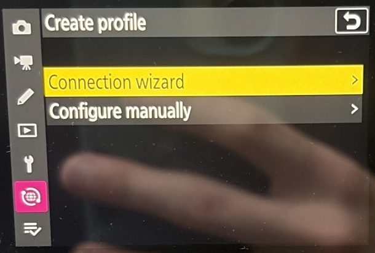
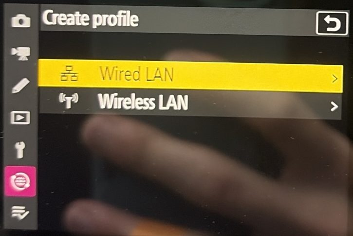
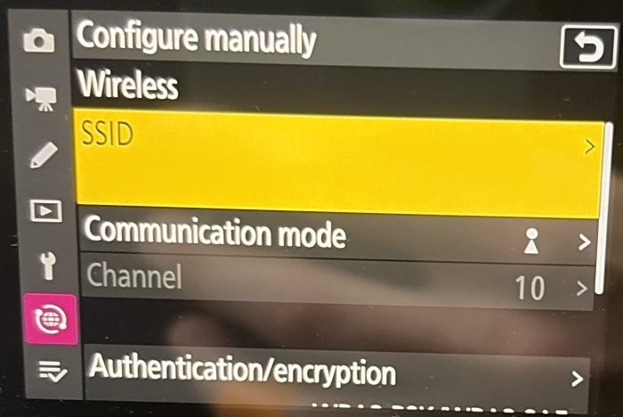
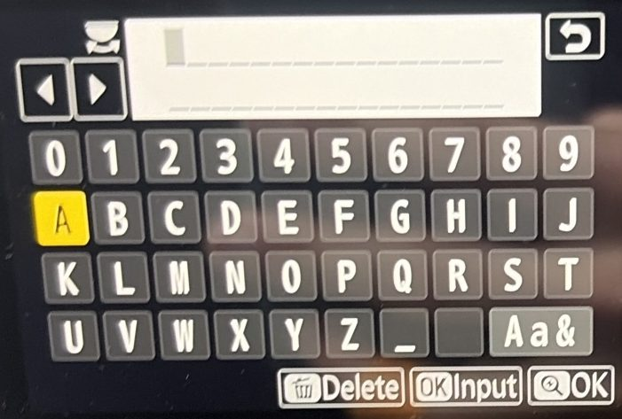
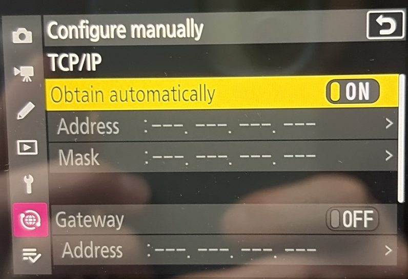
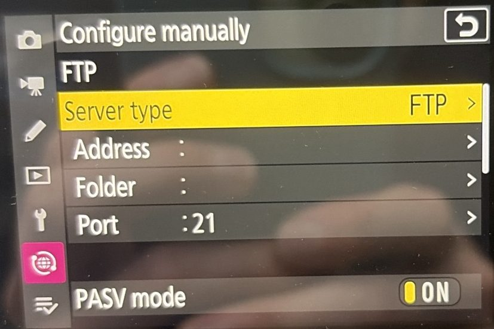
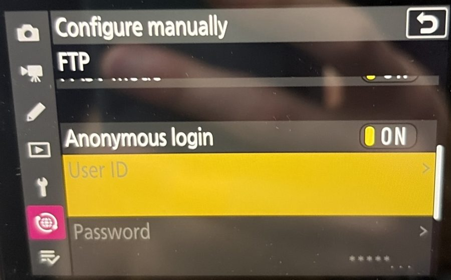
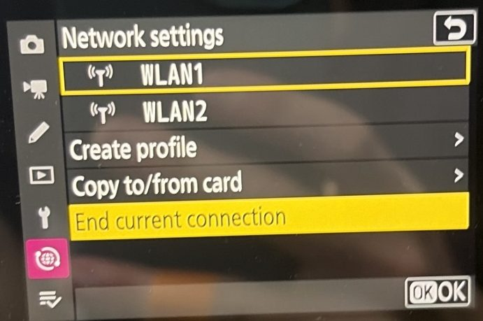

Each photo you take in the garage appears on your PC upstairs about 2 seconds later. No cable. One-time setup: about 20 minutes.
C:\z8-wifi-drop. Do not run it from the Downloads folder; it must stay where it is.| Setting | Write it here |
|---|---|
| Address (this PC) | |
| Port | 2121 (always) |
| User ID | z8 (always) |
| Password (8 letters/numbers) | |
| Home Wi-Fi name |
To save typed text, press the zoom-in (+) button, above MENU. To go back, tap the ↺ arrow at the top right.
1MENU › Network menu (the globe icon). Check Airplane mode is OFF.
2Connect to FTP server › Network settings › Create profile.
3Pick Configure manually, not the wizard. The wizard uses port 21, which is wrong here.

4Pick Wireless LAN.
You now see the list General / Wireless / TCP/IP / FTP. Leave General as it is.

5Wireless › SSID: type the home Wi-Fi name exactly. Capitals count. Tap the letters on the screen. Aa& switches between capitals, small letters and symbols. The trash-can button deletes a letter.
6Leave Authentication/encryption as it is. Scroll down to Password: type the Wi-Fi password.


7Go back. TCP/IP › Obtain automatically: ON. Type nothing else here.

8Go back. FTP:

9Scroll down in FTP:
z8 (small letters)
10Back out to Network settings. Highlight your profile (WLAN1, WLAN2 ...) and press OK to connect.
"FTP" in green on the shooting screen = connected. Red = error (see Part E).
To edit a profile later: highlight it and press RIGHT, not OK.

MENU › Network menu › Connect to FTP server › Options:
| Option | Set to | Why |
|---|---|---|
| Auto upload | ON | Every shot is sent by itself. |
| Upload RAW + JPEG as | JPEG only | A RAW file is 50 MB and takes 4.5 s; a JPEG takes 1.6 s. |
| Keep connection | ON | The camera reconnects after a Wi-Fi drop (uses more battery). |
| Overwrite if same name | OFF | A photo already sent is never replaced. |
| Delete after upload | OFF | The memory card stays as a backup. |
Also set the camera clock: Setup menu › Time zone and date. Match the PC clock, including daylight saving time.
ROLEX-116610) and press Enter.ROLEX-116610_01.jpg, _02 ... in C:\QDAM\Listings\ROLEX-116610\.| What you see | Do this |
|---|---|
| "FTP" is red on the camera | Check the Address, Port 2121, User ID z8, and the password. Check that Anonymous login is OFF. |
| The camera cannot find the Wi-Fi | Retype the Wi-Fi name and password. Capitals count. Move the router or the camera closer. |
| It worked yesterday, not today | The PC address may have changed. Open "Z8 camera settings.txt", or run Install.bat again, and compare with the camera's Address. |
| No photos arrive, "FTP" is green | Options › Auto upload ON. Is the PC on and awake? |
| Photos are slow | Options › Upload RAW + JPEG as › JPEG only. Weak Wi-Fi in the garage: add a mesh node or access point there. |
| Anything else | Ask Claude Code (below). |
C:\z8-wifi-drop, run claude, and say what you see, for example: "the camera says FTP in red, help me fix it". It reads the logs on this PC and walks you through the camera menus one step at a time. Take photos of the camera screen and give them to it.Measured on 2026-10-25: Z8 in the garage, router indoors. 0% packet loss; JPEG Fine (17 MB) in 1.6 s; RAW (50 MB) in 4.5 s. · github.com/xtresno/z8-wifi-drop